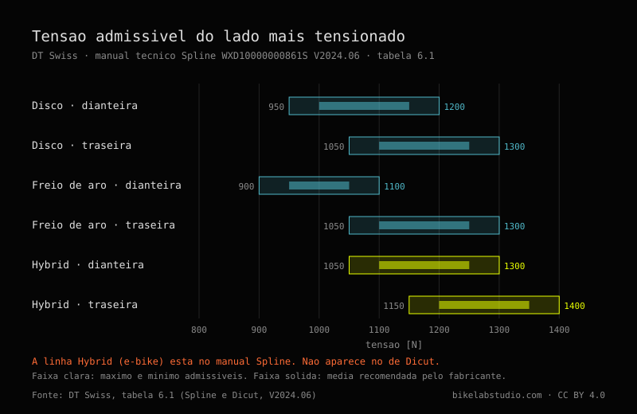
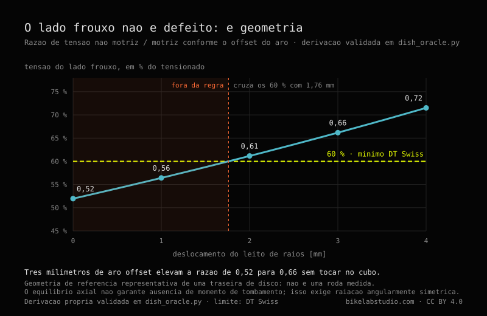
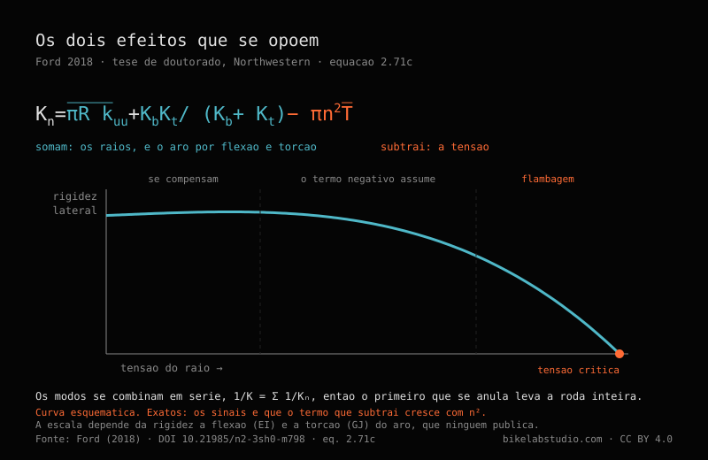

Quanta tensão tem um raio

Keily Sánchez
Do outro lado da roda. Trujillo, janeiro de 2026. Disponível para trabalho editorial.
@sanchez.keily · @kei.san02 · Fotografia: Carlos Eduardo Ravello Joo
Um raio soa. Você toca com a unha e ele dá uma nota, e quem já centrou algumas rodas acaba afinando de ouvido sem querer. Isso todo mundo sabe. O que quase ninguém sabe é quanta tensão deveria haver ali.
Pergunte em dez oficinas e receba dez respostas. E oito dessas dez vão dizer, com a calma de quem repete algo que ouviu de boa fonte, que meio milímetro de desalinhamento lateral é o que a norma ISO exige.
Não exige. Fui conferir, e é isto o que existe.
Para uma roda de disco comum, a DT Swiss publica uma janela de 950 a 1200 N na dianteira e de 1050 a 1300 N na traseira —cerca de 97 a 122 kgf e 107 a 133 kgf—, e esses valores são do lado mais tensionado, não da roda inteira. O outro lado fica abaixo por geometria, em torno de 52 % numa traseira de disco, e apertá-lo não resolve nada: tira a roda do centro. O meio milímetro de desalinhamento que todo mundo cita não vem da norma ISO: vem de um guia da Park Tool onde está escrito como orientação geral. A DT Swiss especifica 0,3 mm para as suas próprias rodas.
MÓDULO_01 // A RODA NÃO PENDURA
Antes dos números é preciso entender o que sustenta o quê, porque quase todo mundo entende ao contrário — e a culpa não é de ninguém: a roda engana.
Um raio é um arame. Ele puxa, e nunca empurra: se você o comprime, ele dobra e deixa de fazer qualquer coisa. Então, quando você vê trinta e dois raios sustentando alguém de oitenta quilos, o que está vendo não são os de cima pendurando a bicicleta. É um aro que saiu de fábrica apertado por trinta e dois arames que puxam todos para o cubo ao mesmo tempo. O aro vive comprimido: é um anel com diâmetro sobrando que não pode se esticar.
Você sobe e a roda achata um pouco onde toca o chão. Os raios dessa região perdem tensão. Os de cima não ganham quase nada. O peso não desce pelos raios de cima: transmite-se porque embaixo se deixa de puxar.
Se a tensão de repouso é suficiente, os raios de baixo afrouxam um pouco a cada volta e voltam, e o ciclo que eles veem é pequeno. Se é insuficiente, chegam a zero, ficam soltos por um instante e voltam a carregar de golpe. Um raio não quebra por puxar muito: quebra por soltar e voltar a puxar, volta após volta, durante anos.

MÓDULO_02 // QUANTA TENSÃO, EM NÚMEROS
A DT Swiss publica, e publica bem: em newtons, separado por tipo de freio e por uso, na tabela 6.1 dos seus manuais técnicos —o da série Spline, documento WXD10000000861S, versão 2024.06, e o do Dicut, WXD10000000860S, da mesma data.
O cabeçalho traz uma precisão que quase nunca é citada: os valores são do lado mais tensionado da roda. Não da roda inteira.
| Roda | Mínimo | Máximo | Em kgf |
|---|---|---|---|
| Disco, dianteira | 950 N | 1200 N | 97 – 122 |
| Disco, traseira | 1050 N | 1300 N | 107 – 133 |
| Freio de aro, dianteira | 900 N | 1100 N | 92 – 112 |
| Freio de aro, traseira | 1050 N | 1300 N | 107 – 133 |
| E-bike, dianteira | 1050 N | 1300 N | 107 – 133 |
| E-bike, traseira | 1150 N | 1400 N | 117 – 143 |
A coluna em quilogramas-força é uma conversão nossa, a 1 kgf = 9,80665 N, porque quase todo tensiômetro de oficina lê em kgf. Os valores oficiais são os newtons.

Aquela última linha é a única cifra de fabricante que encontramos que põe número no que o motor de uma elétrica exige da roda: cem newtons a mais de teto do que a traseira de disco equivalente. Está no manual do Spline e não está no do Dicut, que é a linha de estrada e não leva rodas de e-bike.
E agora, por que você nunca viu essa tabela. No PDF esses números não dizem 1200. Dizem 1 200, com um espaço fino tipográfico no meio. Procure "1200" dentro do documento e não encontra nada. Nenhuma ocorrência. Para ler a tabela foi preciso baixar o PDF e descomprimir os seus fluxos internos byte a byte, porque nem a busca do próprio visualizador os enxerga. Um dado de fabricante, gratuito, publicado e verificável — e estruturalmente invisível para qualquer máquina que vá procurá-lo.
MÓDULO_03 // O MEIO MILÍMETRO
A ISO 4210-7:2023 é a parte da norma que trata de rodas e aros. Dez páginas, segunda edição, janeiro de 2023. Lemos ela inteira.
Não contém nenhum valor em milímetros. Nenhum. Tem forças em newtons, durações em minutos e duas figuras com um relógio comparador montado explicando como se mede a exatidão rotacional. Como se mede, não quanto se admite.
Ela diz sim onde mora a cifra: no item 4.4 manda controlar o desalinhamento lateral conforme a ISO 4210-2:2023, item 4.10.1. Essa parte 2 custa dinheiro e não a lemos. Então o número existe, tem endereço conhecido, e quase ninguém foi a esse endereço — nós tampouco. Preferimos dizer assim a fingir que a norma não diz nada.
«Meio milímetro de desalinhamento lateral é o que a norma ISO exige.»
Da Park Tool, guia de centragem de 31 de março de 2021, e dito com toda a honestidade: «As a general guideline, try for 0.5 millimeters or less of lateral deviation.» Uma orientação geral. Na mesma página dão 1 mm para o desalinhamento radial —o dobro de margem— por uma razão de oficina que merecia ser repetida tanto quanto o número: a roda vai levar um pneu em cima, e pneus não são fabricados com essa precisão.
Enquanto isso, na tabela 6.2 desses mesmos manuais, a DT Swiss especifica para as suas próprias rodas 0,3 mm de desalinhamento lateral em carbono e alumínio soldado, e 0,4 em alumínio com luva. O mesmo valor para freio de aro e para disco, o que desconcerta quem supõe que o disco perdoa mais.
Park Tool 0,5. DT Swiss 0,3. Quase o dobro, entre duas autoridades que ninguém contesta. Não se contradizem de todo: a Park Tool escreve um guia para qualquer roda que entre numa oficina, a DT Swiss uma especificação de produto para as suas. Mas quem cita 0,5 como universal está trabalhando acima do que o fabricante daquela roda admite, e quem cita como normativo está citando algo que não abriu.

MÓDULO_04 // O LADO FROUXO
Toda roda traseira com cassete tem um lado frouxo. O flange do lado motriz fica mais perto do centro para dar espaço aos pinhões, então os seus raios saem com menos ângulo e precisam puxar mais forte para o aro ficar centrado. O outro lado fica abaixo. Sempre.
A pergunta de oficina é quanto abaixo, e essa cifra ninguém publica: procuramos em fabricantes de cubos, de aros e na literatura técnica. Não está lá. Mas não precisa que ninguém publique, porque decorre da estática: o aro só fica centrado se os puxões laterais dos dois lados se anularem. O que sai disso depende de três coisas apenas —quantos raios por lado, o afastamento dos flanges ao plano da roda e o comprimento dos raios.
Numa traseira de disco comum o lado não motriz fica em torno de 52 % do lado motriz. Se o lado tensionado vai a 1200 N, o frouxo trabalha entre 600 e 900 N conforme o cubo. Essa é a faixa real em que trabalha metade dos raios da sua roda traseira, e é metade do que diz a tabela.
Três consequências que servem na segunda-feira de manhã.
A primeira. Essa relação não depende de como você monta a roda, nem da bitola do raio, nem de quanto aperta. Então «o lado esquerdo está frouxo» não é um defeito que se conserte apertando: se apertar, tira do centro. A Park Tool já dizia em prosa —«the opposing side will simply have lower tension when the centering, or dish, is correct»—; o que faltava era o número.
A segunda. Circula bastante, sobretudo em inglês, que o lado motriz vai «1,82 vezes» mais tensionado. Esse número não é uma constante da natureza: é o resultado de um cubo específico. Muda com a geometria de cada roda. Na nossa configuração de referência dá 1,93. Citá-lo como universal é citar a medida da roda de outra pessoa.
E a terceira, a que mais gostamos. Um aro offset —furado fora do centro— muda essa geometria sem tocar no cubo. Três milímetros de deslocamento elevam a relação de 0,52 para 0,66. E aqui aparece algo que não vimos escrito em lugar nenhum: a DT Swiss pede que o lado frouxo não caia abaixo de 60 % do tensionado, e essa mesma roda de referência com aro simétrico fica em 52 %. Não chega. Cruza os 60 % com 1,8 mm de offset. O aro offset não é um refinamento de marketing: é o que torna alcançável a regra do próprio fabricante.

A derivação completa, com os seus casos limite e a validação numérica, está publicada como código aberto no repositório da BikeLab. Não é um resultado experimental: é geometria, e qualquer um pode refazê-la ou quebrá-la.
MÓDULO_05 // ONDE OS RAIOS QUEBRAM
Henri Gavin instrumentou três rodas traseiras com extensômetros, saiu pedalando com elas, depois levou raios ao laboratório e os quebrou por fadiga. Setenta e seis. Publicou a repartição:
O cotovelo é aquela curva de noventa graus que o raio faz para entrar no cubo, dobrada a frio na fabricação, com o metal endurecido e com tensões residuais de nascença. Gavin chama isso, com estas palavras, de «this fatigue critical detail». Os outros oito quebraram na rosca, onde os vales do filete concentram tensão.
Nota de oficina: se um raio quebrar, a primeira coisa é olhar onde quebrou. Ele está dizendo o que aconteceu.
E aqui cobramos algo que deixamos passar no começo. «Um raio é um arame», sem mais, não vale para a linha alta: um raio bom é mais fino no meio do que nas pontas. Um 2,0/1,8/2,0 tem dois milímetros nas pontas e 1,8 no trecho longo. Parece enfraquecê-lo e faz o contrário: a zona fina estica mais para a mesma carga e, ao esticar mais, absorve parte do ciclo que de outro modo chegaria inteiro às extremidades. O meio é afinado justamente para aliviar o cotovelo e a rosca, que é onde quebram os setenta e seis.
MÓDULO_06 // MAIS TENSÃO NÃO É MAIS RÍGIDA
Entre ciclistas circula que mais tensão deixa a roda mais rígida. Faz sentido intuitivo: tensionar soa a endurecer, e o raio tensionado soa mais agudo quando você o toca, igual a uma corda. Entre montadores de rodas circula o contrário: que a tensão não afeta a rigidez enquanto nenhum raio afrouxar por completo sob carga.
Matthew Ford mediu, simulou e calculou, e escreveu isto na página quatro da sua tese na Northwestern:
«Contrary to both popular belief and expert consensus, increasing spoke tension reduces the lateral stiffness of the wheel, which I demonstrate through theoretical calculations, finite-element simulations, and experiments.»
Aumentar a tensão reduz a rigidez lateral. No item 2.6.2 ele enumera as duas crenças, a do ciclista e a do profissional, e liquida as duas juntas: «Both of these views are incorrect.»
O mecanismo, em bom português: a tensão entra por duas portas que empurram em direções contrárias. Por uma, um raio tensionado resiste mais a ser movido de lado — o efeito de corda de violão que todo mundo intui. Pela outra, esses trinta e dois raios puxando para o centro estão comprimindo o aro, e um aro comprimido é um anel que quer flambar. Pense numa régua de plástico que você empurra pelas duas pontas: aguenta, aguenta, e de repente salta para um lado. O aro está o tempo todo nessa situação.

Em tensão baixa os dois efeitos quase se cancelam, e por isso medir nessa faixa não mostra nada: a roda parece indiferente. Mais acima, o termo negativo assume e a rigidez lateral cai. Continue subindo e chega a uma tensão crítica em que a roda flamba e não volta.
Cuidado com a leitura fácil. Isso não diz que se deva tensionar pouco. A tensão alta continua sendo a única coisa que impede um raio de chegar a zero sob carga, que é o que de fato os quebra. O que diz é que a tensão não é uma alavanca de rigidez: quem aperta um pouco mais «para ficar mais firme» está pagando algo e não está comprando nada.
MÓDULO_07 // A NORMA DISTINGUE, SIM, AS MODALIDADES
Voltamos à norma por um momento, porque há algo que ela distingue e que na oficina nunca se menciona.
A ISO 4210 conhece quatro tipos de bicicleta: cidade e trekking, jovem adulto, montanha e estrada. Procuramos «downhill» e «BMX» no documento inteiro: zero ocorrências. Não existem ali.
Para cada um desses quatro ela fixa uma força sobre o aro no ensaio de resistência estática. Três deles, 250 N. O de montanha, 370. Quarenta e oito por cento a mais.
E três detalhes do método valem mais do que o número. A força vai perpendicular ao plano da roda: não é o peso do ciclista, que seria radial, é um empurrão lateral. O ensaio mede deformação permanente —anota-se a posição do aro, carrega-se por um minuto, descarrega-se, deixa-se assentar outro minuto e mede-se de novo—, então o que se verifica não é quanto entorta, e sim se fica entortada. E numa roda traseira a força é aplicada pelo lado do cassete, empurrando para o lado que tem menos tensão. Quem escreveu essa norma sabia exatamente por onde uma roda cede.
Repare onde isso nos deixa. Ford diz que o que a tensão reduz é a rigidez lateral. Gavin diz que o padrão de raiação importa sobretudo sob carga lateral, e é aí que se ganha ou se perde vida em fadiga. E o único número da norma que muda conforme a modalidade é lateral. Três fontes, três métodos, quarenta anos entre a primeira e a última, apontando para o mesmo eixo. Enquanto isso a conversa de oficina é quase toda sobre peso, que é radial.
MÓDULO_08 // O QUE FAZER COM ISSO NA SEGUNDA-FEIRA
Nada do que veio antes serve se não mudar o que você faz diante da bancada. Isto é o que muda:
- Peça o número a quem fabricou o aro, não à internet. A janela é do fabricante do aro, não do raio nem do cubo, e varia. Se ele não publica, essa ausência já é um dado sobre o produto.
- Meça o lado tensionado e leve-o à janela; o frouxo, deixe onde a geometria o puser. Se o frouxo der 50-55 % do tensionado numa traseira de disco, a roda está certa, não errada.
- Uniformidade antes de magnitude. Entre duas rodas, uma a 1000 N com todos os raios parelhos e outra a 1200 N com dispersão grande, a que dura é a primeira. Raios quebram pelo ciclo, não pelo nível.
- Quando um quebrar, olhe onde. Cotovelo: fadiga por tensão insuficiente ou por ciclos grandes. Rosca: revise o niple e o assento. Pelo meio: isso não é fadiga, é pancada.
- Não aperte «mais um pouco para ficar firme». Você não está comprando rigidez. Está se aproximando da flambagem do aro.
- E com o pneu vazio. As faixas genéricas de 100 a 120 kgf que circulam são dadas com o pneu sem pressão, condição que quase todo mundo omite ao repeti-las.
MÓDULO_09 // OS TRÊS MONTES
Tudo o que saiu aqui, classificado. Não por tema: por que tipo de coisa é cada afirmação, que é o que decide quanto peso ela pode sustentar.
| MEDIDO — HÁ UM ENSAIO OU UMA ESPECIFICAÇÃO ATRÁS | |
| 950–1200 N em disco dianteira, 1050–1300 na traseira, 1150–1400 na traseira de e-bike, lado mais tensionado | DT Swiss, tabela 6.1 |
| Desalinhamento lateral 0,3 mm em carbono e alumínio soldado; 0,4 com luva | DT Swiss, tabela 6.2 |
| 370 N sobre o aro em montanha, 250 nos outros três tipos, pelo lado do cassete | ISO 4210-7:2023 |
| 68 de 76 raios quebram no cotovelo trabalhado a frio; 8 na rosca; nenhum pelo meio | Gavin, 1996 |
| Aumentar a tensão reduz a rigidez lateral; existe uma tensão de flambagem | Ford, 2018 |
| A carga estática por roda é 60 % do peso máximo de sistema | DT Swiss, manual ASTM |
| DERIVADO — NINGUÉM MEDE, MAS DECORRE DA ESTÁTICA | |
| A relação entre os lados é geometria pura: não depende de como se monta nem de quanto se aperta | Equilíbrio do aro |
| O lado não motriz fica em 52 % do motriz numa traseira de disco comum | O anterior |
| 3 mm de aro offset elevam essa relação de 0,52 para 0,66 sem tocar no cubo | O anterior |
| CRITÉRIO — ALGUÉM COM BOM OLHO FIXOU, SEM ENSAIO PUBLICADO | |
| 0,5 mm de desalinhamento lateral e 1 mm de radial como orientação de oficina | Park Tool, 2021 |
| ±20 % de dispersão em relação à média como tensão relativa aceitável | Park Tool, 2021 |
| 100–120 kgf como faixa genérica de aro, com o pneu sem pressão | Park Tool, 2021 |
| SEM RESPALDO QUE TENHAMOS ENCONTRADO | |
| A tabela peso do ciclista → número de raios | Sete bases científicas |
| A precisão de um tensiômetro, em ±% | Park Tool e DT Swiss |
| Que tensão e que dispersão as rodas novas trazem de fábrica | Zero resultados |
São bons critérios, os da Park Tool. Nós os usamos. Mas um critério não é uma medição, e chamá-lo pelo nome não lhe tira valor: dá a ele o seu.
E mais uma que não cabe em monte nenhum: o limite normativo de desalinhamento existe, tem endereço exato —ISO 4210-2:2023, item 4.10.1— e não o lemos. Nem nós nem, provavelmente, a maioria dos que o citam.
MÓDULO_10 // RESPOSTAS DIRETAS
Cada resposta se sustenta sozinha e leva a fonte dentro, para poder ser citada sem arrastar o resto do texto. É a forma curta de tudo o que veio antes.
Quanta tensão deve ter um raio de bicicleta?
A DT Swiss publica a janela na tabela 6.1 dos seus manuais técnicos (Spline WXD10000000861S e Dicut WXD10000000860S, V2024.06), e os valores são do lado mais tensionado da roda, não da roda inteira: 950 a 1200 N em roda de disco dianteira, 1050 a 1300 N na traseira de disco, 900 a 1100 N em freio de aro dianteira e 1150 a 1400 N na traseira de bicicleta elétrica, que é o teto mais alto que o fabricante publica. Em quilogramas-força, dividindo por 9,80665: 97–122, 107–133, 92–112 e 117–143 kgf.
A norma ISO exige 0,5 mm de desalinhamento lateral?
Não. A ISO 4210-7:2023, a parte da norma dedicada a rodas e aros, não contém nenhum valor em milímetros: apenas forças, tempos e métodos de medida. No item 4.4 remete o controle do desalinhamento à ISO 4210-2:2023, item 4.10.1, que é uma norma paga. O 0,5 mm repetido nas oficinas vem do guia de centragem da Park Tool de 31 de março de 2021, onde está escrito como orientação geral. A DT Swiss especifica 0,3 mm para as suas próprias rodas em carbono e alumínio soldado (tabela 6.2).
Por que o lado não motriz da roda traseira é mais frouxo, e dá para resolver apertando?
É mais frouxo porque o flange do lado do cassete fica mais perto do centro da roda para dar espaço aos pinhões: os seus raios saem com menos ângulo e precisam puxar mais forte para o aro ficar centrado. A relação entre os lados é geometria —número de raios por lado, afastamento dos flanges e comprimento dos raios— e não depende de como a roda é montada nem de quanto se aperta, então apertar o lado frouxo não corrige: tira a roda do centro. Numa traseira de disco comum o lado não motriz fica em torno de 52 % do motriz; um aro offset de 3 mm eleva essa relação para 0,66 sem tocar no cubo. Derivação aberta da BikeLab Studio, 2026.
Onde os raios de bicicleta quebram?
No cotovelo. Henri Gavin quebrou por fadiga 76 raios em laboratório e publicou a repartição no Journal of Engineering Mechanics (ASCE) em 1996: 68 quebraram no cotovelo trabalhado a frio, 8 na rosca e nenhum no trecho central. Por isso os raios de linha alta são afinados no meio: a zona fina estica mais e absorve parte do ciclo que de outro modo chegaria inteiro ao cotovelo e à rosca.
Mais tensão nos raios deixa a roda mais rígida?
Não. Matthew Ford demonstrou o contrário na sua tese de doutorado na Northwestern University (2018, DOI 10.21985/n2-3sh0-m798) com cálculo, elementos finitos e ensaio: aumentar a tensão dos raios reduz a rigidez lateral da roda, porque os raios comprimem o aro e um aro comprimido tende a flambar; existe uma tensão crítica na qual a rigidez lateral se anula. A tensão alta continua necessária por outro motivo: impedir que algum raio chegue a zero sob carga, que é o que os quebra por fadiga.
A norma pede o mesmo de uma bicicleta de montanha e de uma de estrada?
Na carga lateral, não. A ISO 4210-7:2023 fixa 370 N sobre o aro para a bicicleta de montanha e 250 N para os outros três tipos que reconhece —cidade e trekking, jovem adulto e estrada. A força é aplicada perpendicular ao plano da roda e, na roda traseira, pelo lado do cassete, que é o lado com menos tensão. O ensaio mede deformação permanente, não deflexão. Downhill e BMX não aparecem no documento.
Quantos raios eu preciso para o meu peso?
Essa tabela não existe. Procuramos em sete bases de dados científicas e na documentação dos fabricantes e não há ensaio publicado que relacione peso do ciclista com número de raios. A indústria limita a roda por outro eixo: a DT Swiss publica um peso máximo de sistema por modelo —ciclista mais bicicleta mais bagagem— e uma regra de repartição segundo a qual a carga estática máxima por roda é 60 % desse peso de sistema.
Ravello Joo, C. E. (2026). Quanta tensão tem um raio. BikeLab Studio, Trujillo, Peru. ORCID 0009-0007-5631-7436. https://www.bikelabstudio.com/articles/cuanta-tension-radios-bicicleta-pt.html
Esta é a versão de divulgação. O estudo técnico traz a leitura íntegra da norma, as equações de Ford, a curva de fadiga de Gavin com o seu trecho extrapolado, a derivação da relação entre os lados e o código que a valida. Por enquanto está em espanhol.
LER_O_ESTUDO_COMPLETO_(ES)_➔Fontes
Todas as cifras foram lidas no seu documento de origem. Os PDFs de fabricante foram baixados e os seus fluxos internos descomprimidos para extrair o texto; os artigos foram lidos por inteiro. Nenhuma cifra vem de resumo nem de trecho de buscador. Onde não conseguimos abrir uma fonte, dizemos. Do texto da norma ISO não se reproduz nada além do seu escopo, que a ISO publica livremente no seu catálogo; os itens são citados por número.